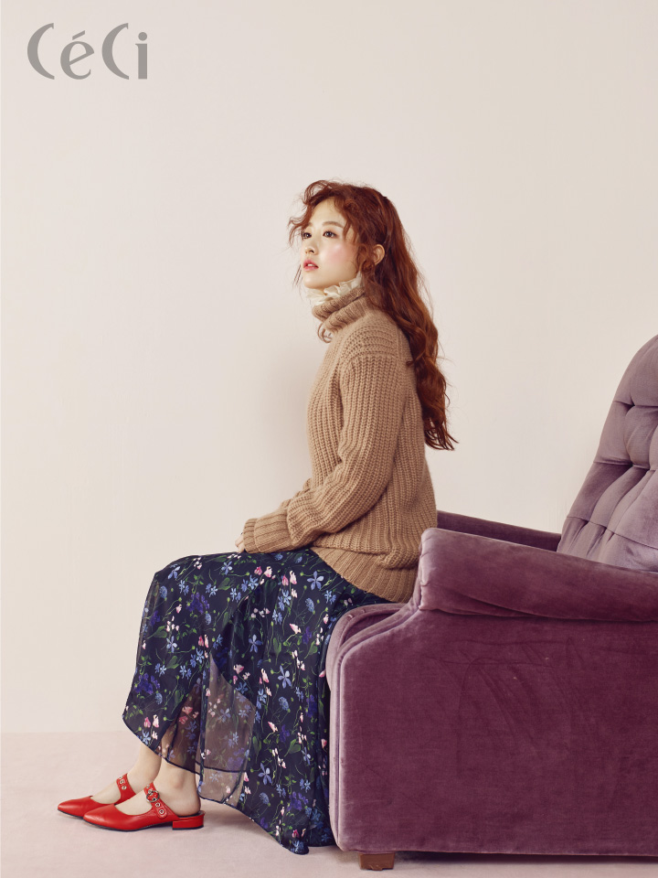

최근 수정 시각: 2017-05-09 21:47:26+0900
|  | |
| 이름 | 박보영 (朴寶英 / Park Bo-Yeong) |
| 다른 이름 | 朴宝英(중 간) パク・ボヨン(일) |
| 출생 | 1990년 2월 12일, 충청북도 증평군 [1] |
| 신체 | 158cm, 41kg, O형 |
| 성좌/지지 | 물병자리/말띠 |
| 가족 | 부모님, 언니, 여동생 |
| 학력 | 증평초등학교 증평여자중학교 대성여자상업고등학교 단국대학교 공연영화학 학사 |
| 종교 | 개신교 |
| 데뷔 | 2006년 EBS 드라마 비밀의 교정 |
| 소속사 | 피데스스파티윰 |
| 팬페이지 | 뽀르테[2] 박보영 갤러리 늑대소년 마이너 갤러리[3] |
| 링크 | 파일:v라이브.png |
2006년 데뷔부터 올해까지 총 일곱 편에서 교복을 입었다. 대부분 소녀 역할. 그러니까 <오 나의 귀신님>은 그녀가 데뷔한 지 10년 만에 맡은 첫 번째 (성인) 멜로드라마다. 처음 만난 ‘어른’ 박보영은 너무나 사랑스러운 여자였다. 남자의 시선이 아니라 엄마도, 여동생도, 누나도 그녀를 어여쁘게 여긴다. 뭐든 자연스러워서 그런 건 아닐지. 웃어도, 울어도, 유혹해도, 애교를 부려도 누군가를 흉내 내지 않는다. 온전히 자신으로 연기하는 배우. 누구보다 어른 같은 그녀에게 향수를 선물하고 싶다. (드라마에서 모기약을 뿌릴 때 어찌나 안타깝던지.) 프레드릭 말의 오 드 매그놀리아는 그녀에게 꼭 어울리는 향수다. 목련은 지구에서 최초로 핀, 피기 전이 오히려 예쁜, 봄의 시작을 알리는 꽃. 꽃말은 고귀함. 늘 첫 번째로 꼽는 동명의 영화 DVD도 함께 선물할 수 있으면 더욱 좋겠다. 예전부터 어른의 ‘아이템’을 시계라고 생각했다. 그녀가 시계를 찬 모습을 본 적이 거의 없다. 만약 그 이유가 지나치게 얇은 손목 때문이라면 빈티지 까르띠에 ‘미니어처’ 탱크를 권하고 싶다. 한편 학생 역할은 많이 했지만, 지금 대학 생활은 전혀 못하는 건 아닌지 걱정이다. 뭔가 배우고 싶어 답답할 때 마이클 케인이 쓴 <명배우의 연기수업>을 봤으면. (단국대 도서관에 있다.) 케인이 말한다. “눈이 연기의 모든 걸 말해준다.” 그녀의 외꺼풀 눈이 그 증거다. - GQ코리아 《박보영에게 선물하고 싶은 세 가지》中에서